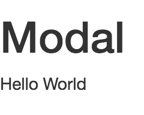

准备开始
有很多不同的方法使用 Metal.js 来构建组件。您可以使用内置集成的 soy 或者 JSX 模板， 甚至在 Metal.js 的基础上构建您自己的模板抽象层来代替。 您可以使用 babel、traceur 或者任何其他的编译器构建 ES6 代码。 您也可以使用 karma、jasmine 或者任何其他的测试框架进行测试，并且可以为您的项目使用任何目录结构。 总而言之，您可以根据自己的需要定制一切，整个世界由你做主。
本指南将重点介绍快速和简单地使用 Metal.js 的方法。 但是如果您很兴奋地想尽快尝试一下，您可以玩玩这个 JSFiddle。
样板文件
您可以用任何您想要的方式组织您的 Metal.js 项目， 但是刚开始我们推荐使用由我们创造的 Yeoman 生成器， 它已经为您准备了项目结构以及基本的开发工作流。
如果您愿意的话您就可以使用它，但是为了使事情更简单，我们提供了为本教程创建的样本文件的压缩包，您可以在这里下载：
请注意，您下载的这个压缩包不仅包含起始样板文件，还包含本教程指南中每个步骤的文件夹，以便您可以随我们一起编码，或者检出每个步骤的最终代码。
现在您有了样板文件,您只需要：
安装 NPM v3.0.0 或者更新的（如果您还没有）
只针对 soy 用户: 安装 Java version 8 或者更新的（如果您还没有）
在终端中输入 1. Hello World 文件夹，并且安装 npm 依赖，通过键入：
[sudo] npm i
一旦依赖安装结束，您将得到一个类似的目录树：
构建
如果打开生成的 src/Modal.js 文件，您可能会注意到它使用的是 ES6 语法：
这意味着它需要经历一个构建过程，因为浏览器还没有完全实现所有的 ES6 特性。
generator-metal 已经准备一些可用的脚本，包括构建脚本。 默认情况下，这个脚本将构建一切到全局变量中。要使用它，只需键入：npm run build。
demo 页面
现在已经构建了代码，只需要在浏览器中打开 demos/index.html 文件。 应该就会显示一个 Hello World 信息，像这样：

如果您查看 demos/index.html 的内容， 您将理解这个组件是怎样被渲染的。 在这个例子中，它是通过调用 new metal.Modal(); 直接实例化的。
默认情况下，这个组件将被附加到 document 的 body 中，当然您也可以指定组件渲染的位置。 查看 渲染组件 来找出如何做吧。
Hello World
正如您所见，生成的项目自动为您呈现 Hello World。好奇的想看看这是怎么做的？这很简单，只需要看看生成的模板:
您可以替换默认的内容来改变组件的呈现，只需确保在更改之后再次构建代码。
接下来的步骤
现在您已经成功运行了一个简单的 Hello World 组件，让我们把它变成 Modal 吧。